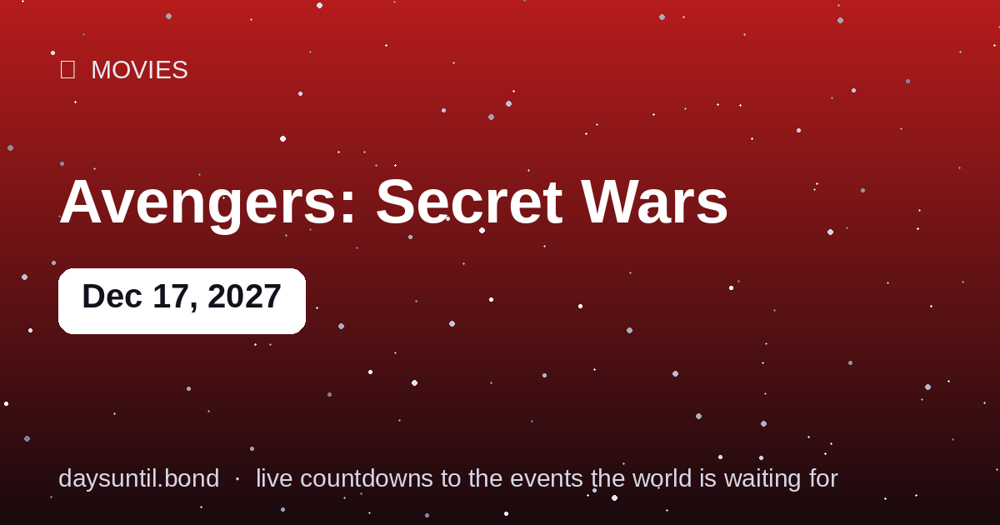

How Many Days Until Avengers: Secret Wars?
Avengers: Secret Wars falls on Friday, December 17, 2027.
As of November 22, 2026: 390 days to go — 55 weeks and 5 days, 280 weekdays (110 weekend days), about 9,360 hours.

Quick facts
| Official release window | December 2027 (Marvel/Disney) |
|---|---|
| Currently listed date | Friday, December 17, 2027 — expected |
| Story position | Follows Avengers: Doomsday |
About Avengers: Secret Wars
Marvel Studios currently lists Avengers: Secret Wars for December 2027. The exact December 17 date used by this countdown appears in public release listings but should be treated as expected until the studio confirms the day.
This page counts down to the currently listed date; release timing can vary by market and the schedule may change.
Avengers: Secret Wars release date — what is confirmed
Marvel Studios currently places Avengers: Secret Wars in December 2027. The specific Friday, December 17, 2027, appears in public film-release listings and is the date used by this countdown, but Marvel's own public-facing calendar currently confirms the month rather than repeating a fully detailed territory-by-territory schedule. Treat the exact day as expected until the studio confirms it.
That distinction matters when you plan a cinema trip. Studios can adjust dates, and international openings do not always match the North American date. We keep the currently listed date visible so the countdown is useful, while making the level of certainty clear rather than presenting an estimate as a guarantee.
Where Secret Wars fits in the Marvel release calendar
Secret Wars follows Avengers: Doomsday, which Disney lists for December 2026. The two films are part of Marvel Studios' Phase Six and the wider Multiverse Saga. The gap between them gives the studio room to bring together storylines and characters introduced across films and streaming series.
The safest way to describe the film today is as the next major Avengers event after Doomsday. The final story details, exact character lineup and the way the film will connect every corner of the MCU should be taken from Marvel's announcements, not from fan theories or leaked casting lists.
What the Secret Wars name means in Marvel comics
The title has a long history in Marvel publishing. The original Secret Wars comic event ran in 1984–1985, while writer Jonathan Hickman's later Secret Wars storyline ran in 2015–2016 and became a major reference point for modern multiverse stories.
Those comics are useful background for understanding why the title carries such large expectations, but they are not a confirmed scene-by-scene outline for the movie. A film adaptation can combine characters, change chronology and use the title as a starting point rather than reproduce either comic exactly.
What is confirmed — and what is still speculation
The dependable facts are the film's title, its Marvel Studios connection and its place in the December 2027 release window. Beyond that, readers should distinguish official announcements from casting rumours, fan-made trailers, supposed plot leaks and theories about which universes will collide.
A useful rule is to ask whether a claim appears on Marvel's own channels or in a direct studio announcement. If it appears only in an anonymous social post, a fan account or a speculative video, it belongs in the rumour category and should not be treated as a confirmed part of the movie.
How to prepare without chasing every rumour
If you want the broad story context, start with the films and series that establish the Multiverse Saga, then follow the official release order as Marvel publishes it. Avengers: Doomsday is the most direct lead-in because it is the preceding Avengers film in the current calendar. The Fantastic Four: First Steps and the Doctor Strange multiverse story are also useful context for the wider setting.
You do not need to watch every Marvel title to understand why Secret Wars matters. A short recap of the main multiverse concepts, the characters you care about and the official Doomsday story may be a more practical preparation than trying to complete the entire catalogue.
Release dates, time zones and cinema tickets
A theatrical release date is a local cinema date, not one worldwide instant. Some markets open a film a day or more before North America, while others schedule it later because of distribution, holidays or local exhibition calendars. The date shown in the countdown is the current listed reference date; check your local cinema closer to release.
Tickets are usually released by cinema chains nearer the opening. Until official ticket links appear, be cautious with pages claiming to sell advance seats far ahead of the normal on-sale window. The official Marvel and cinema listings are the safest place to confirm showtimes, formats and local dates.
Why the countdown can change
Large studio films sometimes move because of production schedules, post-production, release-window strategy or competition from other titles. A changed countdown does not necessarily mean the project is cancelled; it may simply reflect a revised calendar.
We update the date when a reliable studio or distributor source changes it. Until then, the live timer uses the current public listing and the note above explains that the exact day remains subject to confirmation.
Your Avengers: Secret Wars countdown milestones
It is easier to plan against fixed points than against a number that moves. These are the dates on which the countdown to Avengers: Secret Wars passes each marker between now and the day itself — the last one falls on Thursday 16 December, when there will be 1 day left.
| Milestone | Day | Date | Remaining |
|---|---|---|---|
| 365 days | Thursday | 17 December 2026 | 365 days to go |
| 200 days | Monday | 31 May 2027 | 200 days to go |
| 100 days | Wednesday | 08 September 2027 | 100 days to go |
| 50 days | Thursday | 28 October 2027 | 50 days to go |
| 30 days | Wednesday | 17 November 2027 | 30 days to go |
| 14 days | Friday | 03 December 2027 | 14 days to go |
| 7 days | Friday | 10 December 2027 | 7 days to go |
| 3 days | Tuesday | 14 December 2027 | 3 days to go |
| 1 days | Thursday | 16 December 2027 | 1 day to go |
How the remaining time breaks down
390 days is the headline, but it is rarely the number that helps. 280 of those are weekdays and 110 fall on a weekend, which is the split that matters if you are planning around work. It is 55 weeks and 5 days, or roughly 12.8 months, or about 9,360 hours.
| Unit | Until Avengers: Secret Wars |
|---|---|
| Days | 390 |
| Weeks | 55 weeks and 5 days |
| Months (approx) | 12.8 |
| Weekdays | 280 |
| Weekend days | 110 |
| Hours | 9,360 |
| Sleeps | 390 |
Working days are Monday to Friday and do not subtract public holidays, which vary by country and employer — the full month-by-month split is on our weekday page for Avengers: Secret Wars.